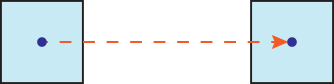
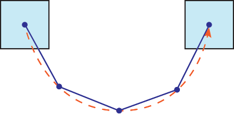
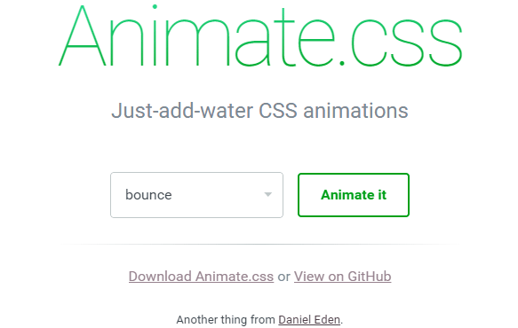
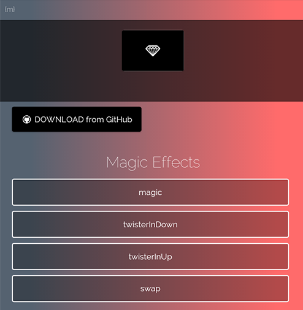

Анимация
Анимация бывает двух видов — покадровая анимация и анимация по ключевым кадрам. При покадровой анимации важным показателем является частота кадров в секунду. Для ориентира — в кинотеатрах используется 24 кадра в секунду, на телевидении — 25, современные камеры умеют снимать с частотой 50 и более кадров в секунду. Соответственно, чтобы сделать рисованный ролик продолжительностью полминуты и с частотой 24 кадра, потребуется 720 изображений. Некоторые мультипликаторы идут на хитрость и чтобы не рисовать огромное количество картинок сокращают их число в два раза, при этом повторяя каждый кадр дважды.
Анимация по ключевым кадрам использует совершенно иной подход. Например, нам нужно сделать перемещение квадрата из одной точки в другую. Достаточно задать исходные, конечные координаты квадрата и время перемещения. Расчёт промежуточных кадров берёт на себя программа, в нашем случае браузер, раз мы говорим о веб-технологиях.

Понятно, что это сильно упрощает процесс создания анимации, поскольку число кадров существенно сокращается, а всякая рутина вычисляется автоматически. Вместе с тем есть и ряд ограничений. К примеру, если требуется сделать движение объекта по дуге. Продвинутые программы вроде Adobe Flash позволяют перемещать объекты вдоль произвольной кривой, но браузеры пока сильно уступают им в этом плане. Движение может происходить только линейно, поэтому кривую мы заменяем приближённой ломаной. В математике этот метод называется аппроксимацией. Чем больше точек мы поставим, тем ближе ломаная будет к исходной кривой и тем плавнее движение, но с другой стороны это усложняет работу, фактически приближая её к покадровой анимации. Так что важно соблюдать баланс между качеством и затратами труда.

@keyframes
Сама анимация на веб-странице делается с помощью двух вещей. Продолжительность анимации, задержка перед её выполнением, число повторений и другие параметры указываются через универсальное свойство animation. А ключевые кадры и значения свойств элемента определяются правилом @keyframes. Затем они связываются между собой с помощью переменной, имя для которой мы придумываем сами. Схематично это выглядит так.
animation: переменная
@keyframes переменнаяТаким образом, создав несколько заготовок ключевых кадров мы можем их применять к разным элементам указывая нужную переменную. Вот, например, как сделать плавное появление текста на экране (пример 1).
Пример 1. Появление текста
<!DOCTYPE html>
<html>
<head>
<meta charset="utf-8">
<title>Анимация</title>
<style>
.fadeIn {
animation: fadeIn 3s;
-webkit-animation: fadeIn 3s;
background: #fc0;
padding: 10px;
}
@keyframes fadeIn {
from { opacity: 0; }
to { opacity: 1; }
}
@-webkit-keyframes fadeIn {
from { opacity: 0; }
to { opacity: 1; }
}
</style>
</head>
<body>
<div class="fadeIn">Основные области применения заклёпочных соединений —
авиационная техника и судостроение.</div>
</body>
</html>В данном примере мы создаём элемент с классом fadeIn, к которому применяется свойство animation со значением fadeIn 3s. Это означает, что анимация будет длиться три секунды, но что именно будет происходить за это время animation не знает, в его задачу лишь входит перенаправление к @keyframes с именем fadeIn. Внутри @keyframes есть два ключевых слова — from и to, они определяют начальное и конечное значение свойств элемента. Исходя из этого браузер за три секунды плавно меняет значение opacity с 0 до 1.
Обратите внимание на префикс -webkit. Браузер Chrome не поддерживает оригинальные свойства, поэтому приходится дублировать записи, добавляя этот префикс.
Анимация может быть сложной и содержать более двух ключевых кадров, чем это показано в примере выше. Тогда ключевые кадры указываются в процентах от времени всей анимации. 0% — начало анимации, 100% — время её окончания, 50% — середина и т. д. Если какие-то ключевые кадры имеют одинаковое состояние, то их можно группировать, как показано в примере 2.
Пример 2. Ключевые кадры
<!DOCTYPE html>
<html>
<head>
<meta charset="utf-8">
<title>Анимация</title>
<style>
.tinLeftOut {
-webkit-animation: tinLeftOut 3s;
animation: tinLeftOut 3s;
}
@-webkit-keyframes tinLeftOut {
0%, 20%, 40%, 50% {
opacity: 1; transform: scale(1, 1) translateX(0);
}
10%, 30% {
opacity: 1; transform: scale(1.1, 1.1) translateX(0);
}
100% {
opacity: 0; transform: scale(1, 1) translateX(-900%);
}
}
@keyframes tinLeftOut {
0%, 20%, 40%, 50% {
opacity: 1; transform: scale(1, 1) translateX(0);
}
10%, 30% {
opacity: 1; transform: scale(1.1, 1.1) translateX(0);
}
100% {
opacity: 0; transform: scale(1, 1) translateX(-900%);
}
}
</style>
</head>
<body>
<img src="image/cat.jpg" alt="" class="tinLeftOut">
</body>
</html>Ключевые слова from и to соответствуют 0% и 100%, поэтому можно указывать как проценты, так и эти ключевые слова, они взаимозаменяемы.
Свойство animation
Правило @keyframes определяет набор ключевых кадров и на этом его функции исчерпываются. Что с этим набором делать, к чему его применять и как, определяет универсальное свойство animation. Чтобы увидеть какое-то подобие движения следует задать переменную указывающую на @keyframes и продолжительность движения в секундах (s) или миллисекундах (ms).
animation: <переменная> <время>По умолчанию анимация длится указанное время, а затем свойства элемента возвращаются в исходное состояние до начала анимации.
Свойство animation имеет восемь значений, которые могут быть заданы непосредственно через него или через отдельные свойства, вроде animation-duration, оно устанавливает продолжительность анимации. Подробнее об этих свойствах смотрите в справочнике.
Библиотека animate.css
В большинстве случаев анимации применяется для создания известных типовых эффектов. Почему бы в таком случае не воспользоваться готовыми наработками в этой области? Есть несколько разных CSS-библиотек, которые достаточно лишь подключить к своему сайту и добавить к желаемым элементам заданный класс. Из таких библиотек популярными являются Animate.css и magic.
Animate.css это бесплатная библиотека доступная по адресу http://daneden.github.io/animate.css/. На сайте выбираете из списка готовый эффект и смотрите как он применяется к заголовку.

Для начала следует скачать библиотеку. Есть два варианта.
- Полная версия. Содержит более трёх тысяч строк кода объёмом около 60 кБ. Она хорошо подходит на первом этапе ознакомления с анимацией в целом, поскольку позволяет взглянуть, как всё устроено.
- Упакованная версия. В css-файле нет табуляции, пробелов и переносов строк. Объём файла за счёт этого сокращается раза в полтора, но читать код при этом становится затруднительно.
Далее подключаем файл animate.css через <link> как это делается с любым другим стилевым файлом.
<link href="animate.css" rel="stylesheet">Чтобы применить эффект анимации к желаемому элементу, добавляем к нему два класса — animated и класс с названием эффекта (список всех эффектов и их названия смотрим на сайте). Например, вы желаете добавить мерцание к изображению на странице. В HTML записываем следующее:
<img src="images/figure.jpg" alt="" class="animated flash">После загрузки страницы изображение померцает и анимация после этого остановится. Для бесконечного повторения добавьте класс infinite.
<img src="images/figure.jpg" alt="" class="animated infinite flash">По умолчанию вся анимация в animate.css длится одну секунду, увеличить время можно через собственный стиль. Если требуется изменить продолжительность только у выбранного эффекта, то используйте класс animated.flash, как показано в примере 3. Вместо flash укажите применяемый эффект. Для изменения времени у всех эффектов оставьте только класс animated.
Пример 3. Использование animate.css
<!DOCTYPE html>
<html>
<head>
<meta charset="utf-8">
<title>Анимация</title>
<link href="animate.css" rel="stylesheet">
<style>
.animated.flash {
-webkit-animation-duration: 3s;
animation-duration: 3s;
}
</style>
</head>
<body>
<p><img src="images/figure.jpg" alt="" class="animated infinite flash"></p>
</body>
</html>magic
Похожая по своему принципу библиотека называется magic. Она содержит немного другие эффекты, поэтому на какой библиотеке остановиться окончательно зависит исключительно от вашего выбора. Посмотреть анимацию в действии можно на этом сайте.
http://www.minimamente.com/example/magic_animations/

Скачайте полную или упакованную версию библиотеки по этому адресу https://github.com/miniMAC/magic и подключите её к своему сайту.
<link href="magic.css" rel="stylesheet">Теперь к выбранным элементам добавляем класс magictime и класс с именем выбранного на сайте эффекта (пример 4). Увеличение продолжительности анимации делается аналогично, с помощью свойства animation-duration.
Пример 4. Использование magic
<!DOCTYPE html>
<html>
<head>
<meta charset="utf-8">
<title>Анимация</title>
<link href="magic.css" rel="stylesheet">
<style>
.magictime {
-webkit-animation-duration: 3s;
animation-duration: 3s;
}
</style>
</head>
<body>
<p><img src="images/figure.jpg" alt="" class="magictime perspectiveUpRetourn"></p>
</body>
</html>